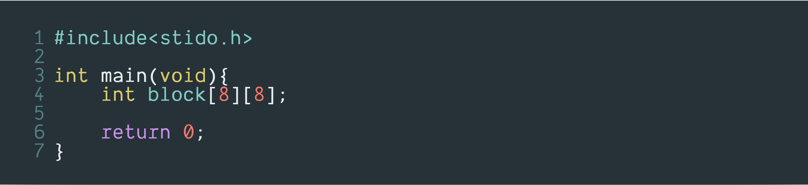
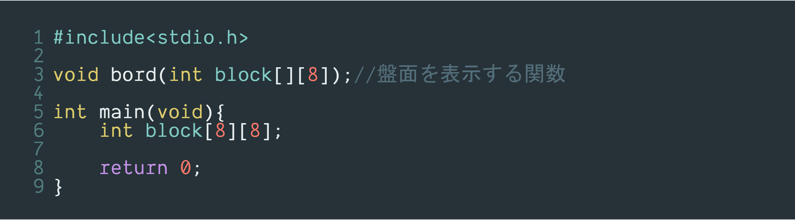
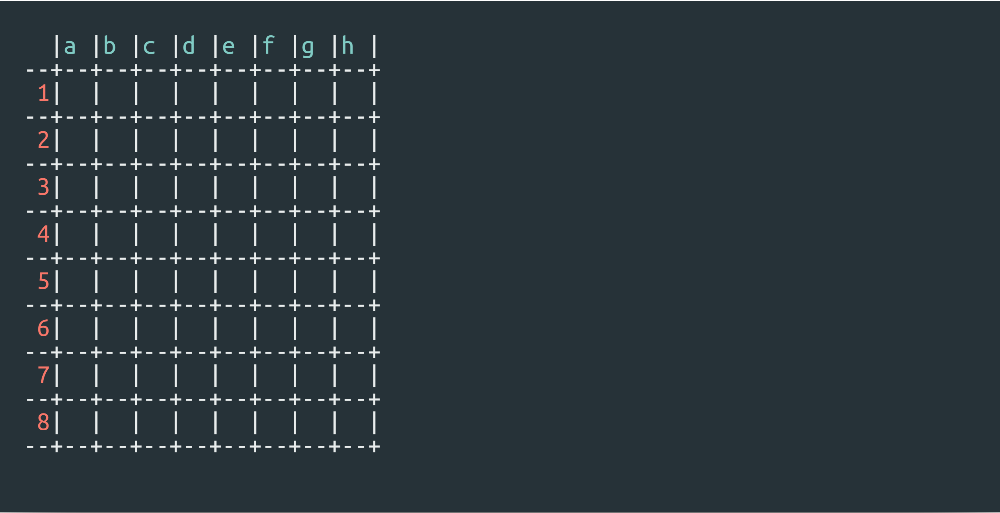
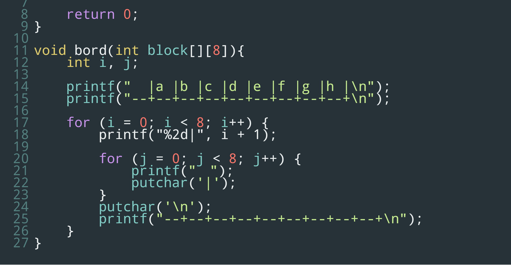
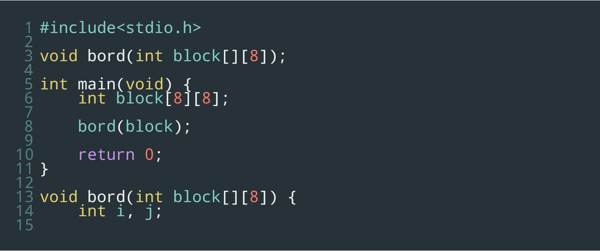
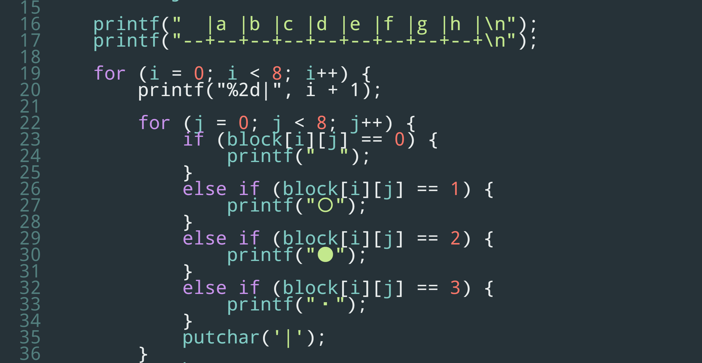
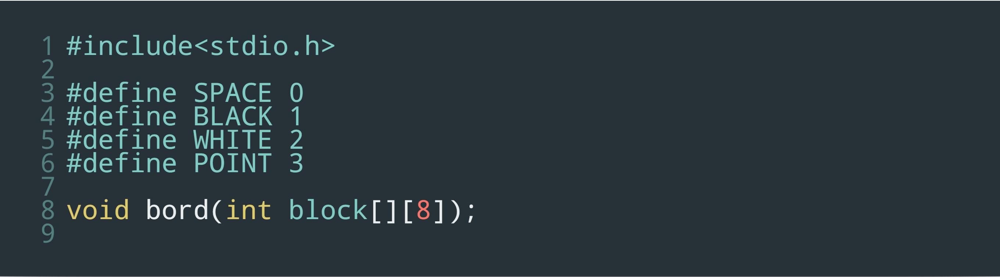
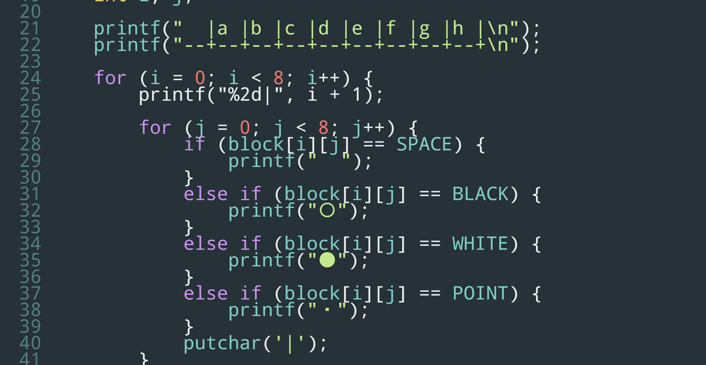
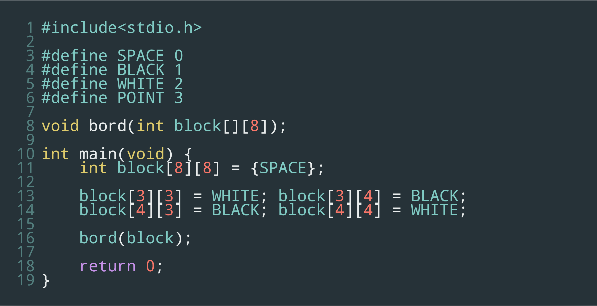

C言語でオセロを作る Part.1
はじめに
今回作るオセロの完成条件は、①普通にオセロができる ②先攻後攻を選ぶことができる ③対戦相手はコンピューター この3つです。ほかにも作っている途中に機能は増やしますが、最低限この3つは入れたいと思います。
YOYOYO's room
はじめに
今回作るオセロの完成条件は、①普通にオセロができる ②先攻後攻を選ぶことができる ③対戦相手はコンピューター この3つです。ほかにも作っている途中に機能は増やしますが、最低限この3つは入れたいと思います。
下準備
では早速ですが作っていきましょう。オセロを作るにあたって絶対欠かせないのが二次元配列です。今回も勿論これを使用します。まずおまじないと呼ばれる定型文を書き、配列名をblock 要素数を8とした二次元配列をint型で宣言します。
これで下準備は完了です。
盤面の表示
ここからは本格的に作業に入ります。まずオセロの盤面がないことには何も始まらないので、盤面を表示する関数を作っていきましょう。関数名をbord 仮引数をblock配列にし、void型で宣言します。今回は使う関数がとても多いので全てプロトタイプ宣言とします。
ここで表示したい盤面をイメージしてみましょう。本物そっくりに作るのは無理があるのでマスごとに区切られていれば良いでしょう。ということで、今回はこのような盤面を表示します。
盤面がイメージ出来たらあとは書いていくだけです。上の2行はprintfでそのまま表示し、それ以降の行は2つのfor文を入れ子にし表示します。
ここで一度bord関数を呼び出してみましょう。block配列を実引数にしてmain関数へ書き込みます。
実行してみましょう。ここで先ほどの盤面が表示されるとひとまず成功です。
ここまでの工程で盤面の基礎ができました。しかしこの関数は駒が置かれるたびに使用します。つまり、2つ目のfor文のprintfの中身を変え、駒も表示できるようにしなくてはなりません。
こうすることでblock配列の中身が0ならスペース 1なら黒(※主なコンソール画面は背景が黒の場合が多く、色が反転してしまうため〇を黒として扱います) 2なら白 3なら・(※駒が置けるときのマーク)がそれぞれ表示されるようになりました。
しかし ０＝スペース １＝黒 だと直感的に理解しづらいですよね。そこでマクロ置換をし、直感的にもわかりやすくします。
 これにより、表示したい駒をそのまま書くだけで表示できるようになりました。
さて盤面の表示もあと少しです。駒を表示する方法は完成したので、あとはblock配列に数値を代入し駒を置いていきましょう。
配列の中身をすべてスペースにし、中央の4つを白と黒にします。ここで実行してみましょう。
実行結果がこのようになると成功です。これで盤面の表示は完了です。
シェアする